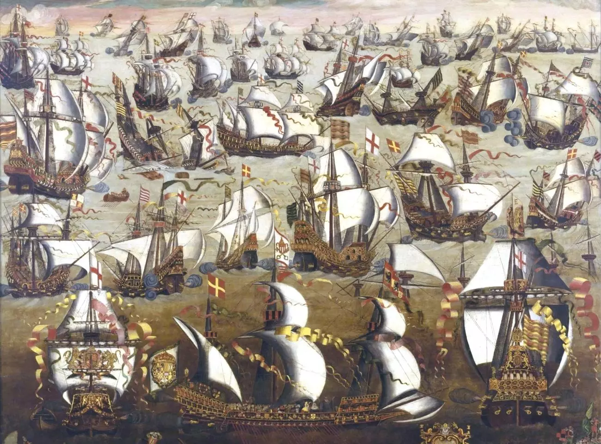

218 av. J.-C. – La présence romaine
Les Romains s'installent dans la péninsule Ibérique et développent des villes, des routes et des monuments.


Patrimoine •✧✧✧• Culture •✧✧✧• Histoire
Des anciennes civilisations a l'Espagne moderne, découvrez le événements qui ont faconné l'identité de ce pays.
Laissez-vous surprendre par toutes les richesses de l'Espagne !Découvrez l'histoire fascinante de l'Espagne, un pays marqué par de grandes civilisations, des conquêtes, des traditions et des événements qui ont façonné son identité. Partez à la découverte de son passé et explorez les lieux historiques qui témoignent encore de sa richesse culturelle.
Les Romains s'installent dans la péninsule Ibérique et développent des villes, des routes et des monuments.

La conquête musulmane transforme une grande partie de la péninsule. L'architecture, les sciences et la culture connaissent un important développement.

La prise de Grenade marque la fin du royaume musulman de Grenade. La même année, Christophe Colomb entreprend son voyage vers les Amériques.
À faire : parcourir le quai jusqu’au petit phare.

L'Espagne devient une grande puissance mondiale et connaît un rayonnement artistique et culturel important.

Christophe Colomb entreprend son célèbre voyage vers les Amériques. Cette année marque également la fin du royaume musulman de Grenade.

L'Espagne traverse une période difficile marquée par un conflit entre républicains et nationalistes, qui bouleverse profondément le pays.

Après la dictature de Franco, l'Espagne adopte une nouvelle Constitution et devient une monarchie parlementaire démocratique.
Découvrez un pays riche en culture, en histoire et en paysages. Voici quelques chiffres qui permettent de mieux connaître cette destination fascinante.
Derrière ces chiffres se cache un pays exceptionnel, composé de paysages variés, de villes magnifiques, de traditions uniques et d'un patrimoine historique remarquable. Chaque région possède son propre charme et mérite d'être découverte.
17
Communautés autonome
17 communautés autonomes et 2 villes autonomes.
505 983
km² de superficie
Un vaste territoire à explorer.
49,6 M
Habitants
Une population de près de 50 millions de personnes.
Madrid
Capitale
Le cœur politique et culturel du pays.